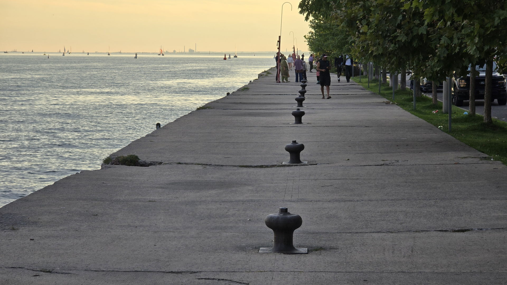
Toronto · Lake Ontario
A four-hundred metre walk to open water.
LoveQuay runs west out of Toronto's Inner Harbour and stops in fresh, clean, open water beside the National Yacht Club. People have swum off its western end for years.
- 400 m
- Long
- 7.5 m
- Wide
- 2
- Safety ladders
- 0
- Sand, grit or grime
The Quay
A working pier that happens to end somewhere wonderful.
LoveQuay is roughly 400 metres long and 7.5 metres wide. It carries you past the mouth of the Inner Harbour and out into the lake proper.
What makes the far end unusual is what isn't there. No shelving beach, no sand stirred up by the wind, no grit underfoot, no weed. Just deep, clear water right up against the wall — which is why people have been swimming here for years, long before anyone gave the place a name.
At the westernmost end you can get in off the edge. Two safety ladders flank that spot: one straight ladder, and one angled, stair-like one that is far kinder on cold hands and tired arms.
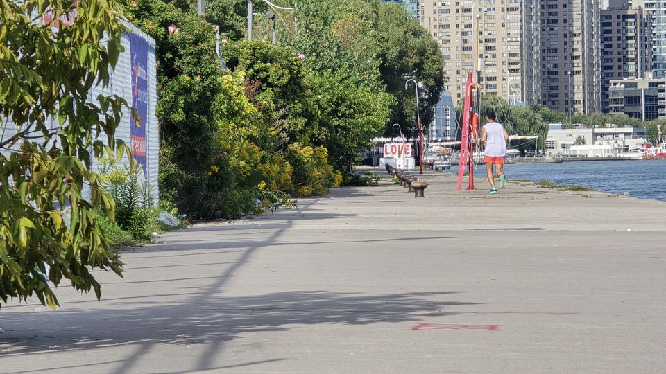
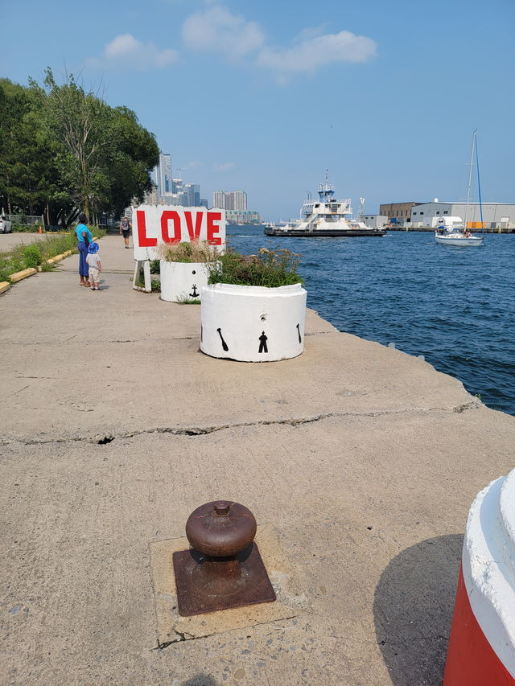
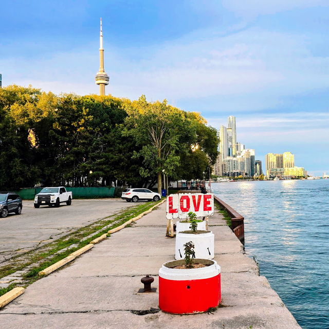
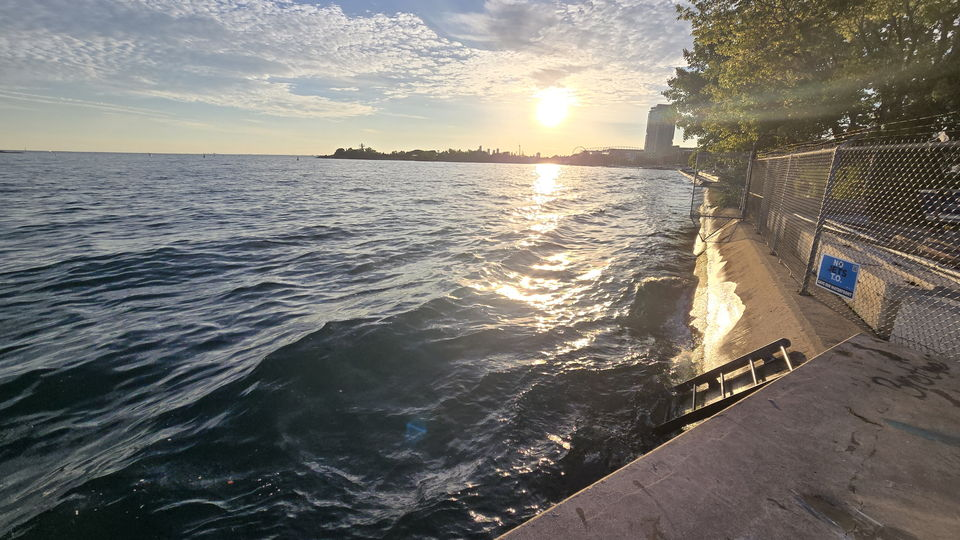
Swimming
In off the west end.
The water at the far end is deep and clean enough to go straight in from the wall. That is the whole appeal — and the whole risk.
Nothing here is lifeguarded, patrolled, or maintained for swimming. There is no shallow end to stand up in and no one whose job it is to notice you. Every person in the water is looking after themselves and the people they came with.
Read the safety notesUse at your own risk
Know your limit,
and stay within it.
Especially in winter. Cold water takes strength and judgement away faster than you expect it to.
Full safety notes- Never swim alone. Bring someone who stays out of the water and can see you the whole time.
- Check the conditions before you get in. Wind, waves, water temperature and how you feel today — not how you felt last week.
- Check the depth and check for debris. What's under the surface changes. Never enter head-first into water you have not checked that day.
- Watch for ice. Chunks of ice have almost the same refractive index as the water around them, which makes them very hard to see. Assume they are there in winter.
The City does not own or maintain this walkway
Signs at the pier read “Danger — Use at Own Risk. Walkway Not Owned or Maintained by The City of Toronto.” Nobody inspects the deck, the edge, or the ladders on a schedule. Treat every visit as your own assessment.
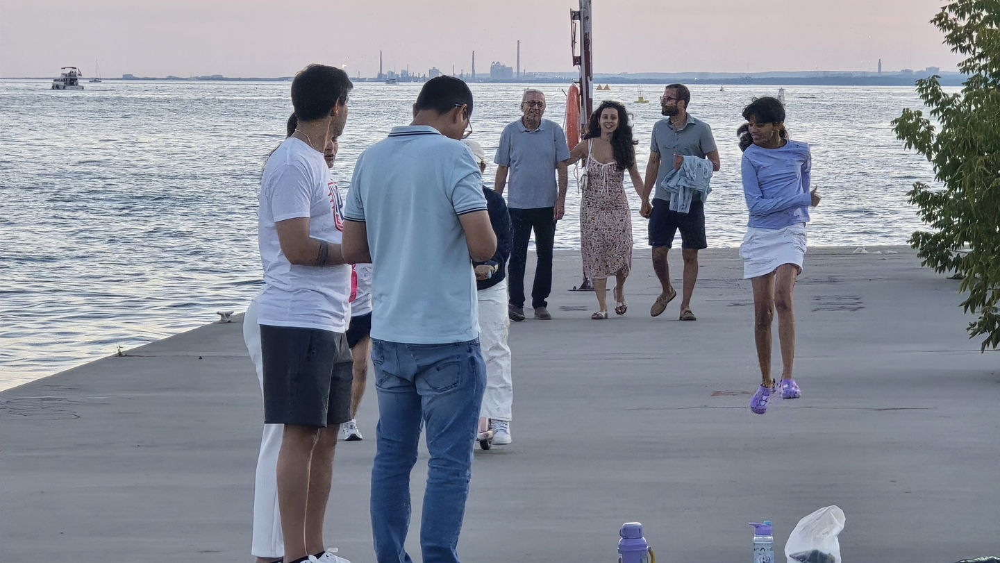
Friends of Love Quay
Nobody's job.
Everybody's place.
Because the City doesn't own or maintain LoveQuay, the work of keeping it decent falls to the people who use it. So we formed the Friends of Love Quay — a volunteer group that shows up, picks up, and keeps an eye on the place.
Keep it beautiful.
How to help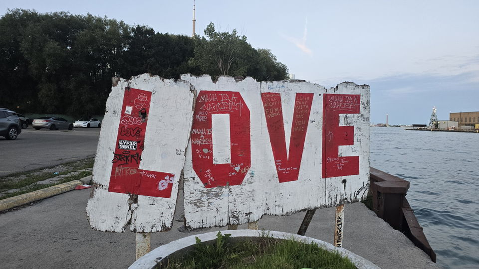
The Name
Named for the art at the other end.
LoveQuay takes its name from the public art installation standing at its easternmost end — the one you pass on your way out.
It's the first thing you see and the last thing you walk past, so the name stuck. The swimming happens 400 metres away at the opposite end, but the whole quay answers to it now.
The Pier, Photographed
Sunsets, swimmers, weather.
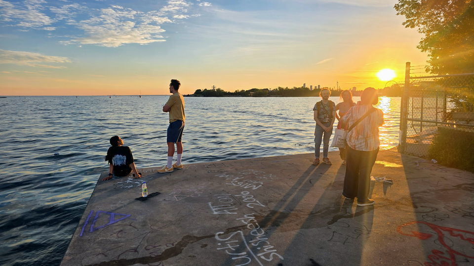
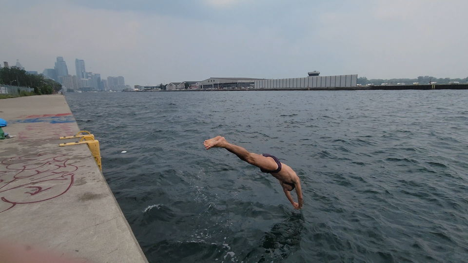
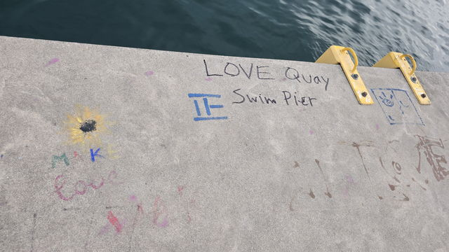
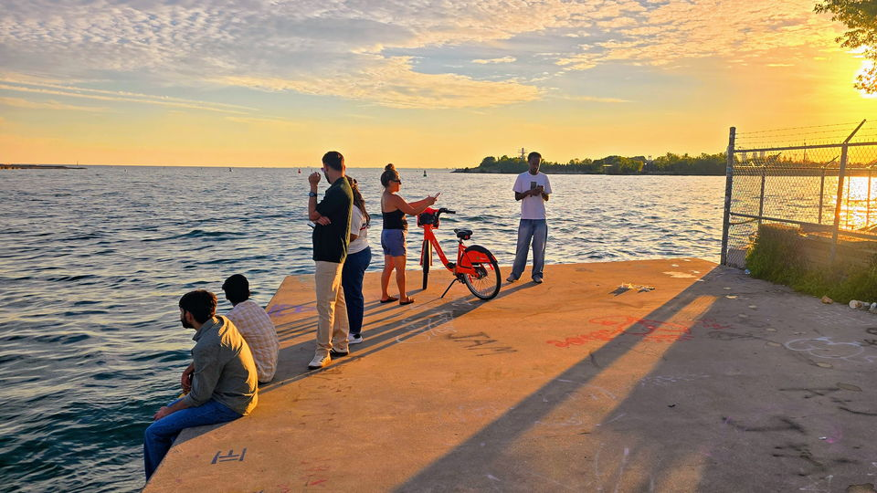